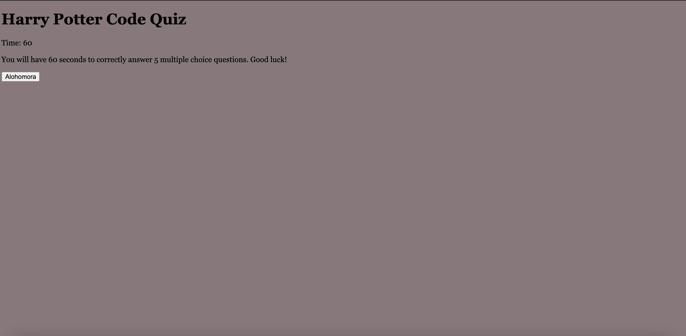
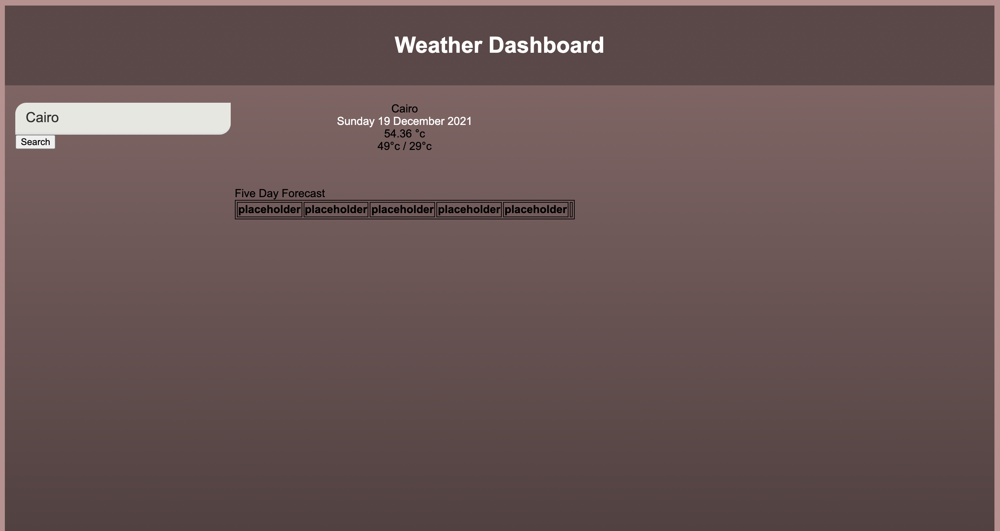

About Me
I am a Web Developer with a background in graphic design, retail management and spent a formative year as a longterm substitute science teacher in a Catholic high school. I love science, reading, spending time with my family and friends, The Real Housewives of Beverly Hills and Harry Potter. I am a plant mom and hedgehog mom to my angel, Ginger. I love music, anything from Led Zeppelin to A Tribe Called Quest and my favorite tv shows include: Seinfeld, Scrubs, and Keeping Up with the Kardashians.Project 1
"My New Best Friend"
My first project for my bootcamp was to design an application that solves a real-world problem by integrating data received from multiple server-side API requests while leveraging a new style of css. It was to challenge us to work as a team as well as to learn this new style while combatting many issues from deciding what the focus of our project would be to many issues with merging and pull requests through GitHub.
Code Game
GitHub Link
Application Link
I created a timed, ten question code game consisting of trivia questions from my favorite movie, Harry Potter. I found the execution difficult and intend to revisit this project to improve my understaning of the syntax.
Weather Dashboard
GitHub Link
Application Link
I created a weather dashboard to work with api keys to gain experience for our first project, My Best Friend. I used OpenWeather for api keys to get accurate data to find the temperature, humidity and UV index for any given city.